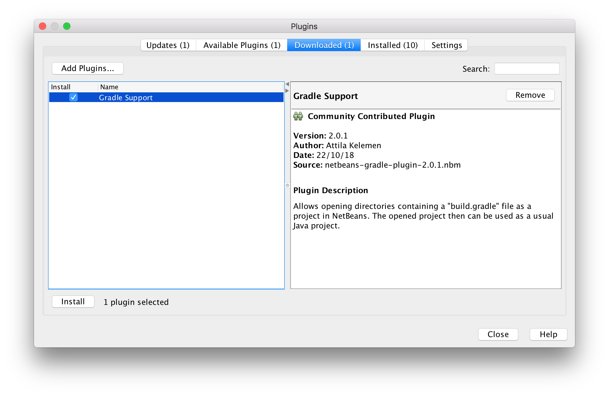
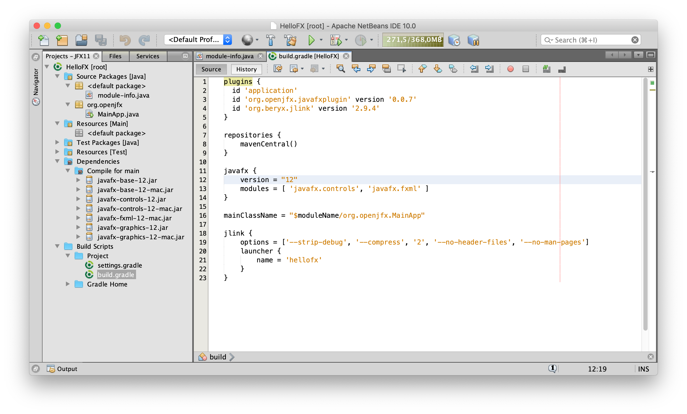
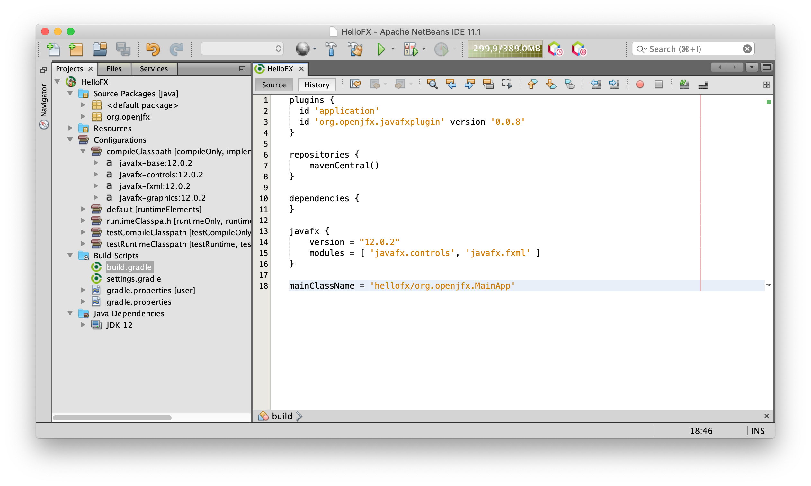

This section explains how to use Java 11 and JavaFX 11 from NetBeans. Version Apache NetBeans 10.0vc2 was used for the following screenshots. A more recent version can be found here.
Download an appropriate JDK 11 for your operating system. Make sure JAVA_HOME is properly set to the Java 11 installation directory.
netbeans_jdkhome=/path/to/jdk-11
You can create a JavaFX 11 modular or non-modular project and use the IDE tools, Maven or Gradle build tools.
Follow these steps to create a JavaFX non-modular project and use the IDE tools to build it and run it. Alternatively, you can download a similar project from here.
Download the appropriate JavaFX SDK for your operating system and unzip it to a desired location, for instance /Users/your-user/Downloads/javafx-sdk-11.
Create a new global Library under Tools -> Libraries -> New Library.
Name it JavaFX11 and include the jars under the lib folder from JavaFX 11.
 Provide a name to the project, like HelloFX, and a location.
An default project will be opened.
Provide a name to the project, like HelloFX, and a location.
An default project will be opened.
Make sure your project is configured to run with JDK 11.
Go to Properties -> Libraries -> Java Platform, and set it to JDK 11.

Go to Properties -> Libraries -> Compile -> Module-path -> + -> Add Library and
add the JavaFX11 library.
Go to Properties -> Libraries -> Compile -> Class-path -> + -> Add JAR/Folder and
add the required JavaFX 11 jars to the project.
 Once the classpath is set, the JavaFX classes will be recognized by the IDE.
Once the classpath is set, the JavaFX classes will be recognized by the IDE.

You can add a main class Main, based on this one,
with an FXML file and
a controllercontroller.

Error: JavaFX runtime components are missing, and are required to run this application
To solve the issue, click on Properties -> Run and add these VM options:
--add-modules=javafx.controls,javafx.fxml
 Click apply and close the dialog.
Click apply and close the dialog.
In case it was needed (or other modules were required as well), these should be the VM options:
--module-path $PATH_TO_FX --add-modules=javafx.controls,javafx.fxml
--module-path %PATH_TO_FX% --add-modules=javafx.controls,javafx.fxml
Click Run -> Run Project to run the project, now it should work fine.
Follow these steps to create a JavaFX non-modular project and use the Maven tools to build it and run it. Alternatively, you can download a similar project from here.
You can select the JavaFX Application project.
 Provide the name of the project, like hellofx and a location.
Provide the groupId, like org.openjfx, the artifactId, like hellofx.
When the project opens, the JavaFX classes are not recognized.
Provide the name of the project, like hellofx and a location.
Provide the groupId, like org.openjfx, the artifactId, like hellofx.
When the project opens, the JavaFX classes are not recognized.

Replace the existing plugins based on this pom file, and set the mainClass accordingly to org.openjfx.MainApp.
Add the required dependencies for javafx.controls and javafx.fxml.

Since we have changed the goals, we need to update the nbactions.xml file, with this goal for run and debug:
<goal>org.codehaus.mojo:exec-maven-plugin:1.6.0:java≶/goal>
Reload the POM. The JavaFX classes will be recognized. Notice also that Maven manages
the required dependencies: it will add javafx.base and
javafx.graphics that are required by javafx.controls and javafx.fxml,
but most important, it will add the required classifier based on your platform, downloading
the specific platform jars.
 As for any other maven dependencies, these jars can be found in the local .m2 repository.
As for any other maven dependencies, these jars can be found in the local .m2 repository.
Click Run -> Run Project to run the project.
You can also open a terminal and run mvn compile exec:java to run the project.
Follow these steps to create a JavaFX non-modular project and use the Gradle tools to build it and run it. Alternatively, you can download a similar project from here.
You need the Gradle plugin for NetBeans 2.0.1. You can download it from the GitHub repository. To install it, go to Tools -> Plugins -> Downloaded -> Add Plugins..., find the nbm file and press install. 
Create a Gradle project with Java.
 Provide the name of the project, like HelloFX and a location for the project.
Provide the main class, like org.openjfx.MainApp.
Provide the name of the project, like HelloFX and a location for the project.
Provide the main class, like org.openjfx.MainApp.

Edit the build.gradle file and replace it with this build file, setting the mainClassName accordingly to org.openjfx.MainApp.
Note we have added the required dependencies with the classifier for the platform.
Since Gradle doesn't resolve transitive dependencies with classifiers, we need to add all
the modules (javafx.base, javafx.graphics and for javafx.controls).
Reload the project and you will get the JavaFX dependencies.
 As for any other Gradle dependencies, these jars can be found in the local .gradle repository.
As for any other Gradle dependencies, these jars can be found in the local .gradle repository.
Based on this MainApp class,
add its content to the project main class. Then add the controller
and the FXML and
and the css
files.
Note that the JavaFX classes are recognized by the IDE.

Right click on the project window, select Tasks->build->build to
build the project, and on Tasks->run->run to execute the project.

You can also open a terminal and run:
./gradlew run
gradlew run
Download the appropriate JavaFX jmods for your operating system and unzip it to a desired location, for instance /Users/your-user/Downloads/javafx-jmods-11.
Follow these steps to create a JavaFX modular project and use the IDE tools to build it and run it. Alternatively, you can download a similar project from here.
 Provide a name to the project, like HelloFX, and a location. Select also platform JDK 11.
When the project opens, rename the hellofx package to org.openjfx.
Provide a name to the project, like HelloFX, and a location. Select also platform JDK 11.
When the project opens, rename the hellofx package to org.openjfx.
Go to Properties -> Libraries -> Compile -> Module-path -> + -> Add Library and add the JavaFX11 library.
Edit the module-info class and include the required modules javafx.controls and javafx.fxml.
Since FXML uses reflection to access the controller in the module, this has to be opened to javafx.fxml. Finally,
export the package org.openjfx.

Based on this MainApp class,
add its content to the project main class. Then add the controller
and the FXML and
and the css
files.

Being a modular project, and since we already added the JavaFX11 library to the module-path, there is no need to add any VM arguments. Click Run -> Run... to run the project.
To create a runtime image, create a global Library under NetBeans -> Tools -> Libraries -> New Library.
Name it JavaFXMODS11 and include the folder with the JavaFX jmods 11.
Add this library to NetBeans -> Properties -> Libraries -> Run -> Modulepath.

To create the custom runtime image now, go to NetBeans -> Properties -> Build -> Packaging and
select Create JLINK distribution, providing a name for the launcher, like HelloFX.
 Apply and close the dialog, and click the Clean and Build button, to build the image.
Apply and close the dialog, and click the Clean and Build button, to build the image.
To run the image:
dist/jlink/HelloFX/bin/java -m hellofx/org.openjfx.MainApp
dist\jlink\HelloFX\bin\java -m hellofx/org.openjfx.MainApp
Follow these steps to create a JavaFX modular project and use the Maven tools to build it and run it. Alternatively, you can download a similar project from here.
You can select the Maven -> JavaFX Application project. Provide the name of the project, like hellofx and a location. Provide the groupId, like org.openjfx, the artifactId, like hellofx. When the project opens, the JavaFX classes are not recognized.
Replace the existing plugins based on this pom file, and set the mainClass accordingly to org.openjfx.MainApp. Add the required dependencies for javafx.controls and javafx.fxml.
Add the module-info class, including the required modules javafx.controls and javafx.fxml.
Since FXML uses reflection to access the controller in the module, this has to be opened to javafx.fxml. Finally,
export the package org.openjfx.

Based on this MainApp class,
add its content to the project main class. Then add the controller
and the FXML and
and the css
files.

Click Run -> Run Project to run the project. You can also open a terminal and run mvn clean compile package exec:java to run the project.
To create a runtime image, run the following commands:
export PATH_TO_FX_MODS=path/to/javafx-jmods-11
$JAVA_HOME/bin/jlink --module-path $PATH_TO_FX_MODS:target/hellofx-1.0-SNAPSHOT.jar --add-modules=hellofx --output jre
jre/bin/java -m hellofx/org.openjfx.MainApp
set PATH_TO_FX_MODS="path\to\javafx-jmods-11"
jlink --module-path "%PATH_TO_FX_MODS%;target\hellofx-1.0-SNAPSHOT.jar" --add-modules=hellofx --output jre
jre\bin\java -m hellofx/org.openjfx.MainApp
Follow these steps to create a JavaFX modular project and use the Gradle tools to build it and run it. Alternatively, you can download a similar project from here.
Create a Gradle project with Java. Provide the groupId, like org.openjfx, the artifactId, like hellofx. Select the Gradle JVM based on the project JDK 11. Then provide a name to the project, like HelloFX and a location for the project. When the project opens, add a package org.openjfx and an empty MainApp class.
Edit the build.gradle file and replace it with this build file, setting the mainClassName accordingly to org.openjfx.MainApp.
Note the use of the org.javamodularity.moduleplugin plugin, that removes the necessity of setting the module-path for the compile and run task. 
Add the module-info class, including the required modules javafx.controls and javafx.fxml. Since FXML uses reflection to access the controller in the module, this has to be opened to javafx.fxml. Finally, export the package org.openjfx. 
Based on this MainApp class, add its content to the project main class. Then add the controller and the FXML and and the css files.
Right click on the project window, select Tasks->build->build to build the project, and on Tasks->run->run to execute the project. You can also open a terminal and run:
./gradlew run
gradlew run
To create a runtime image, set the org.gradle.java.home and path.to.fx.mods
properties in the local gradle.properties file.
 Right click on the project window, select Tasks-> jlink to create the image.
To run the image:
Right click on the project window, select Tasks-> jlink to create the image.
To run the image:
build/hellofx/bin/java -m hellofx/org.openjfx.MainApp
build\hellofx\bin\java -m hellofx/org.openjfx.MainApp